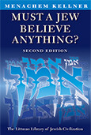

Maimonides' Confrontation with Mysticism
Foreword by Moshe Idel
Maimonides' vision of Judaism was deeply elitist, but at the same time profoundly universalistic. He was highly critical of the regnant Jewish culture of his day, which he perceived as so heavily influenced by ancient Jewish mysticism as to be debased. While focusing on that critique, Kellner skillfully and accessibly demonstrates how Maimonides used philosophy in order to purify a corrupted and paganized religion, and to present distinctions fundamental to Judaism as institutional, sociological, and historical, rather than ontological. In Maimonides' hands, metaphysical distinctions are translated into moral challenges.
More info
Many books on Maimonides have been written and still more will appear. Few present Maimonides, as Menachem Kellner does against the actual religious background that informed his many innovative and influential choices. He not only analyses the thought of the great religious thinker but contextualizes it in terms of the ‘proto-kabbalistic’ Judaism that preceded him. Kellner shows how the Judaism that Maimonides knew had come to conceptualize the world as an enchanted universe, governed by occult affinities. He shows why Maimonides rejected this and how he went about doing it. Kellner argues that Maimonides’ attempted reformation failed, the clearest proof of that being the success of the kabbalistic counter-reformation which his writings provoked.
Kellner shows how Maimonides rethought Judaism in different ways. It is in highlighting this and identifying Maimonides as a religious reformer that this book makes its key contribution. Maimonides created a new Judaism, ‘disenchanted’, depersonalized, and challenging; a religion that is at the same time elitist and universalist.
Kellner’s analysis also shows the deep configuration of Judaism in a new light. If, as Moshe Idel says in his Foreword, Maimonides was able to ‘reform so many aspects of rabbinic Judaism single-handedly, to enrich it by importing such dramatically different concepts, it shows that the profound structures of this religion are flexible enough to allow the emergence and success of astonishing reforms. The fact that, great as Maimonides was, he did not overcome the traditional forms of proto-kabbalism shows that the dynamic of religion is much more complex than subscribing to authorities, however widely accepted.’
About the author
Menachem Kellner is Wolfson Professor Emeritus of Jewish Thought at the University of Haifa and Chair of the Department of Philosophy and Jewish Thought at Shalem College, Jerusalem. He is the author of Dogma in Medieval Jewish Thought and Must a Jew Believe Anything? and translator of Isaac Abravanel’s Principles of Faith, all published by the Littman Library. He is also the author of Maimonides on Human Perfection, Maimonides on Judaism and the Jewish People, and Maimonides on the ‘Decline of the Generations’ and the Nature of Rabbinic Authority among other books. His translations of Gersonides’ Commentary on Song of Songs and Maimonides’ Book of Love appeared in the Yale Judaica Series. Professor Kellner’s critical editions of the original texts of Abravanel’s Principles of Faith and of Gersonides’ Commentary on Song of Songs were published in Hebrew.
Contents
Foreword by Moshe Idel
Preface
Acknowledgements
Note on Transliteration and Conventions Used in the Text
1 Maimonides' Critique of the Jewish Culture of His Day
Introduction • The Judaism Maimonides Opposed • The Philospphical Basis of Maimonides’ Opposition • Esotericism and Elitism • Maimonides’ Failure • Elements of Proto-Kabbalah • Maimonides’ Opposition to the World of Proto-Kabbalah • Excursus: Terminology
2 The Institutional Character of Halakhah
Introduction • Two Opposing Views • Maimonides’ View • Maimonides’ Motivation • Mistakes and Errors in Halakhah / Science / Dogma • Error in ‘Science’ • Halakhah as Instrumental • Halakhah and Theology • God and Abraham: Who Chose Whom?
3 Holiness
Introduction • A Glance at the Biblical Evidence • Maimonides on the Nature of Holiness in General • Holy Persons • The People of Israel • The Sanctity of the Land of Israel and of Jerusalem • Holy Things: Torah, Tefilin, Mezuzot • Holy Times
4 Ritual Purity and Impurity
Introduction: Two Ancient Views on Ritual Purity and Impurity • Judah Halevi on Ritual Purity and Impurity • Maimonides on Ritual Purity and Impurity • Maimonides on the Sacrifical Cult and the Laws of Ritual Purity and Impurity • Maimonides on the Moral Significance of the Laws of Ritual Purity and Impurity • Critiques of Maimonides’ Account of the Sacrifices
5 The Hebrew Language
Introduction • Judah Halevi on the Hebrew Language • Maimonides on the Hebrew Language • Why Did Maimonides Adopt His Position? • Nahmanides’ Critique
6 Kavod, Shekhinah, and Created Light
Introduction • Shekhinah, Kavod, and Created Light in Rabbinic Texts • Sa’adiah Gaon • Judah Halevi • Maimonides on Kavod in the Guide of the Perplexed • Maimonides on Shekhinah in the Guide of the Perplexed • Maimonides on Created Light in the Guide of the Perplexed • Shekhinah and Kavod in Mishneh torah and Commentary on the Mishnah
7 Jews and Gentiles
Introduction • Theory of the Acquired Intellect • Jews and Non-Jews • Digression: Which of the Thirteen Principles Must Actually Be Accepted to Achieve a Share in the World to Come? • Who is an ‘Israelite’? • Wise Non-Jews and the World to Come • Was Maimonides Truly Universalist?
8 Angels
Introduction • Angels in Rabbinic Thought • Angels in Piyutim • Angels in Heikhalot Literature • Sa’adiah Gaon and Judah Halevi on Angels • Maimonides on Angels
Afterword: Contemporary Resistance to the Maimonidean Reform
Glossary
Index of Citations from Moses Maimonides and Judah Halevi
Bibliography
General Index
Reviews
'One of the most important books on Maimonides to be published in the last thirty years and quite possibly one of the most important in the field of Jewish philosophy. The writing is clear and crisp, and the scholarship is impeccable. The book explains not just how radical Mamonides's dissatisfactions with the Judaism of his day was, but how radical his opinions are for most Jews today.'
Kenneth Seeskin, AJS Review
'Impressive . . . lucid . . . that rare scholarly study that manages not to compromise on academic rigour while daring to state strongly-held convictions that are so relevant in times troubled by the many irrational "surges" of political, military, and religious fundamentalism.'
Allan Nadler, Forward
'Kellner has contributed a study of great value not only for an academic audience but for lay and yeshivish audiences as well. The book is a welcome addition to the samizdats currently circulating within the underground yeshiva counter-culture.'
James A. Diamond, Meorot
'A spirited, highly stimulating works that reads fluently and fully engages not only with the mind but also the reader's Jewish soul.'
Haim Chertok, Midstream
'Interesting and important . . . extremely valuable in the way that it roots both Maimonides' legal code and his philosophy in the thought-world and social and religious practices of his own time, and dramatizes the ways in which some of his most characteristic formulations function as critical responses to what prevailed in his own culture and environment.'
Aryeh Botwinick, Philosophy East & West
'One of those rare combinations of erudite scholarship and accessible style, treating an issue that is not only perennially meaningful, but also particularly salient today—features that characterize a number of his works . . Throughout the book, Kellner devises a series of easy-to-follow dualities to structure his argument . . . many books have been written about Maimonides. What Menachem Kellner's book does uniquely is to isolate the ways in which Maimonides bumps against the mystical and mythical strains that run through ancient and medieval Jewish thought like a river. While any educated Jew knows that Maimonides stands out as a leading rationalist, Kellner presents us with a compelling portrait of the multi-faceted ways in which Maimonides expunges these mystical and mythical veins from the Jewish mine.'
Joel Hecker, The Reconstructionist
'Intellectual tour de force . . . On the one hand, Kellner, in a work of objective scholarship, insightfully decodes what he takes to be two opposing religions that have contended for recognition as the Orthodox expression of Judaism from ancient to modern times. On the other hand, Kellner, as an engaged modern Orthodox thinker who has a stake in this conflict, applies wide learning, critical skills, and expansive control of traditional Jewish sources, intellectual history, and analytic philosophical tools in a sustained argument . . . Menachem Kellner's study of Maimonides and the mystics will endure not because it explicates an antiquarian medieval debate; his study talks to moderns who struggle with ideas and ideals, who are both intellectually modern and Jewishly religious.'
Alan J. Yuter, Review of Rabbinic Judaism
'Kellner has refocused Maimonidean studies in a new way. In addition, he has done so in a very learned manner: his footnotes cover a vast area of Jewish scholarship; his summaries of scholarship are very concise; and his bibliography is very full . . . a very important book. It formulates clearly and comprehensively the hyperrationalist reading of Maimonides which is widely held by scholars of Jewish philosophy. It also offers a new proposal on the subject of the opponents against whom Maimonides wrote. Kellner¹s erudition has made this so, and his willingness to engage the present and the future has projected the issue beyond medieval philosophy.'
David R. Blumenthal, Reviews in Religion & Theology
'The strengths of this book lie in its didactic and ideological clarity . . . For those interested in the medieval roots of a major dispute within modern Orthodox Judaism this is an extremely useful book packed with detailed examples of contentious topics.'
Michael Fagenblat, Speculum
'A thought-provoking study that deals with rather more than its title suggests.'
Jeremy Adler, Times Literary Supplement
'Perhaps no author in the last couple of decades has made Maimonides' theology more relevant for contemporary Orthodox dialogue than Menachem Kellner. His works on dogma, belief, rabbinic authority, and other central topics have generated significant debate and even his biggest detractors acknowledge the substantive and stimulating nature of his work . . . This is an extremely thought-provoking work that deserves serious attention, debate, and discussion.'
Tradition Online

364 pages
ISBN: 978-1-904113-29-4 hardback
978-1-906764-15-9 paperback
£35.00 / $49.50 hardback OUT OF PRINT
£18.95 / $29.95 paperback
Publication September 2006
paperback 3 February 2011
Other books by this author:
Dogma in Medieval Jewish Thought
From Maimonides to Abravanel

Must a Jew Believe Anything?

Principles of Faith (Rosh Amanah)
Isaac Abravanel
Translated from Hebrew by Menachem Kellner
The Universalist Horizons of Maimonides' Mishneh Torah
Menachem Kellner and David Gillis
Maimonides in Contemporary Jewish Thought
James A. Diamond & Menachem Kellner